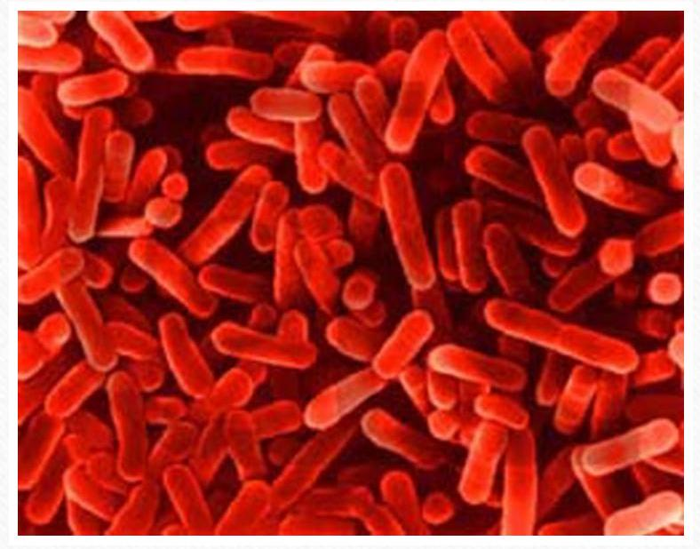
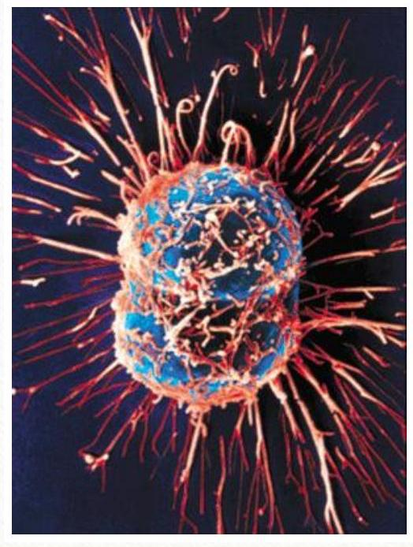
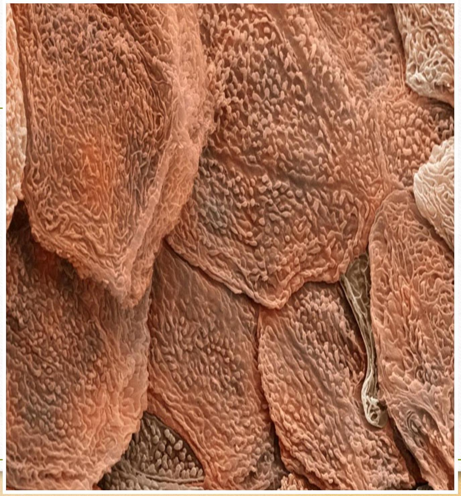
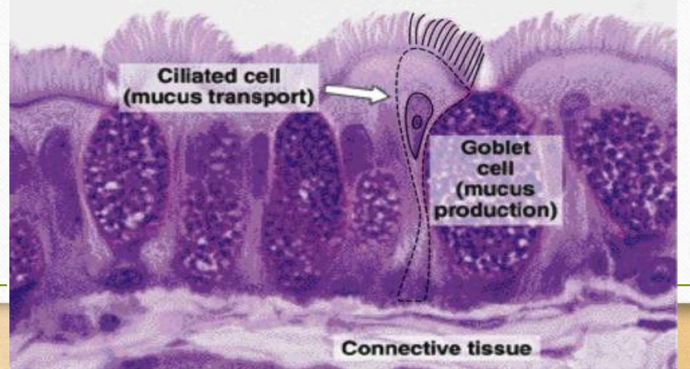
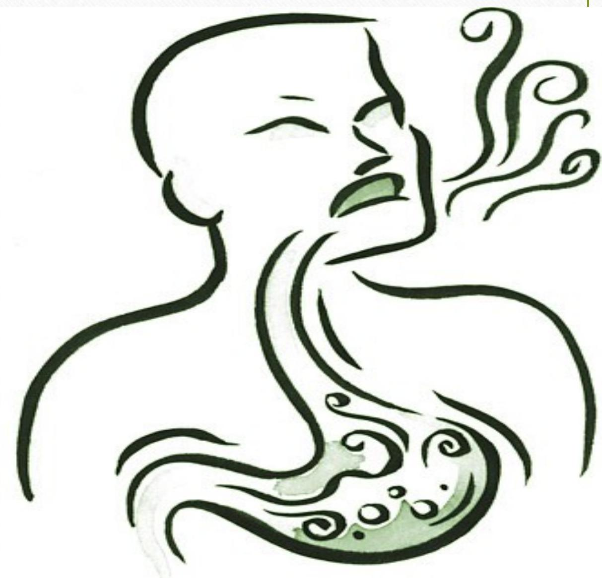
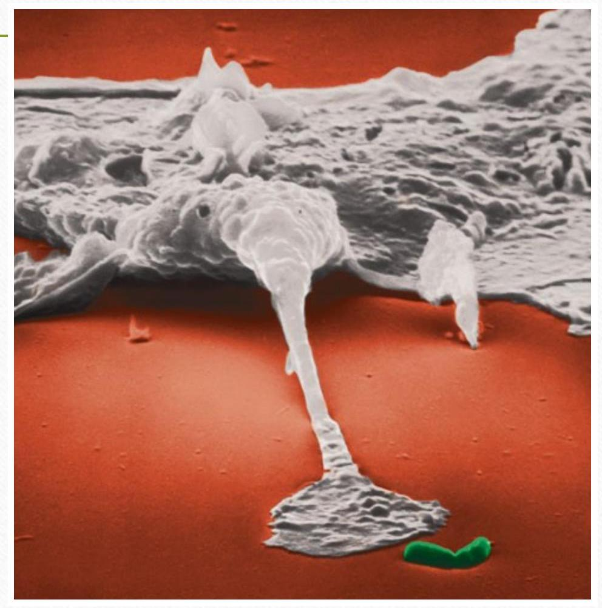
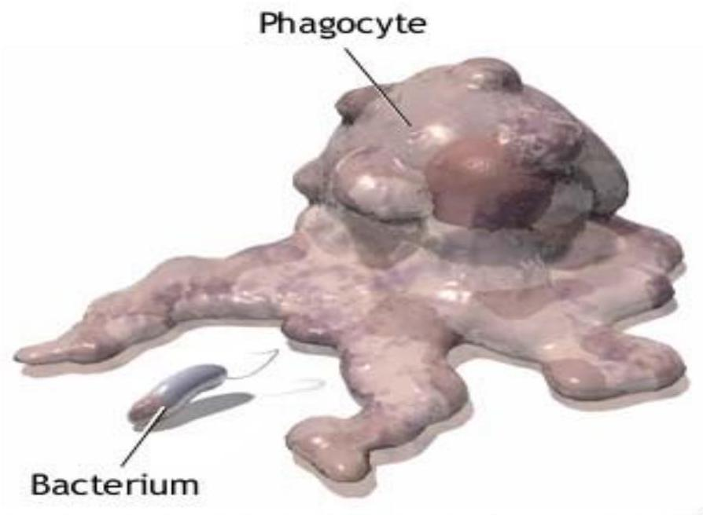
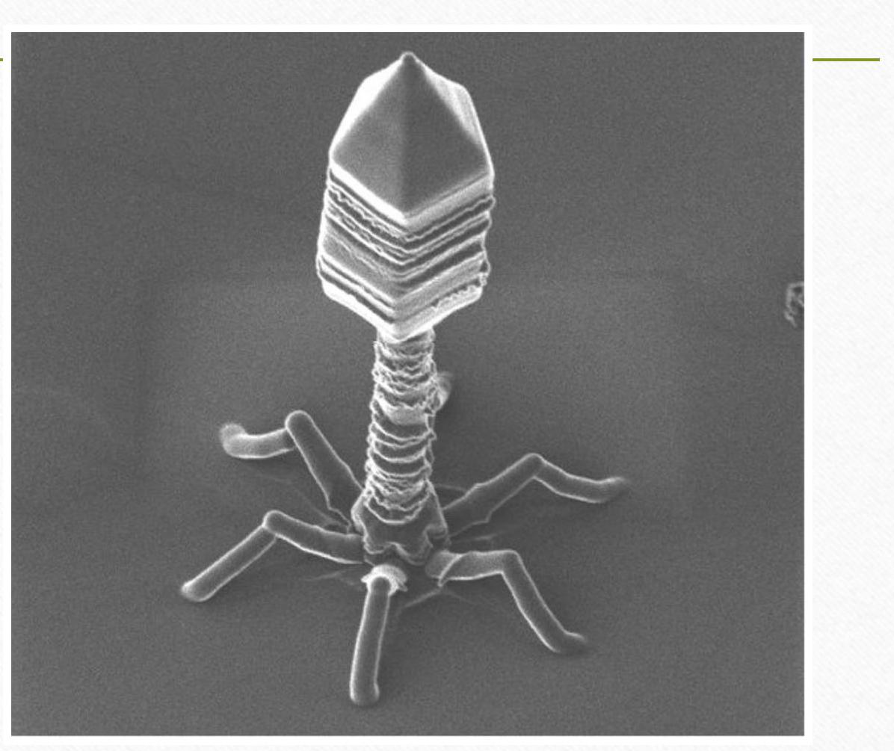
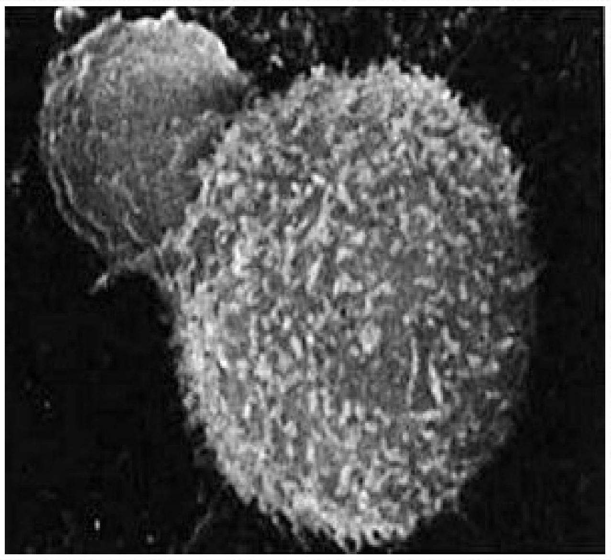
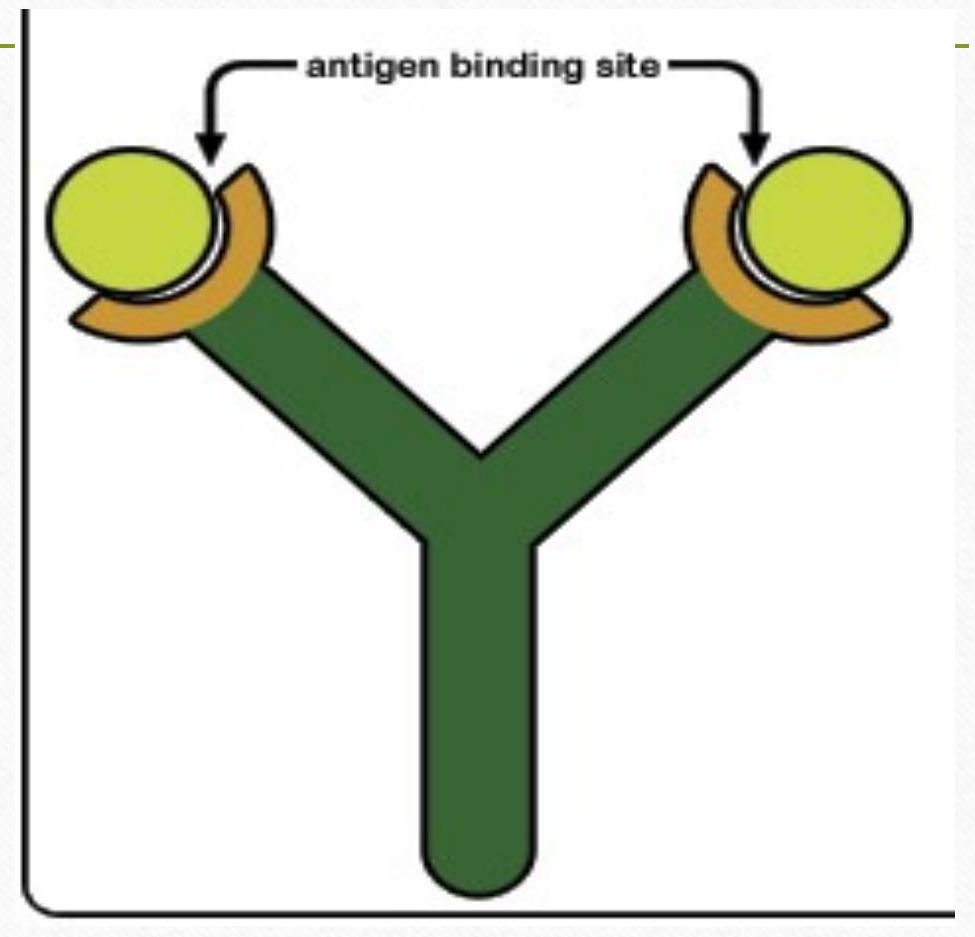

BODY'S RESPONSE/DEFENCE AGAINST INFECTION
The Human Immune System
What is the immune system?
The body's defense against disease causing organisms, malfunctioning cells, and foreign particles
 FIRST LINE OF DEFENCE
The First Line of Defense ~Skin~
The dead, outer layer of skin, known as the epidermis, forms a shield against invaders and secretes chemicals that kill potential invaders
You shed between 40 - 50 thousand skin cells every day!
The First Line of Defense ~Mucus and Cilia~
As you breathe in, foreign particles and bacteria bump into mucus throughout your respiratory system and become stuck
Hair-like structures called cilia sweep this mucus into the throat for coughing or swallowing
The First Line of Defense ~Saliva~
What's the first thing you do when you cut your finger?
Saliva contains many chemicals that break down bacteria
Thousands of different types of bacteria can survive these chemicals, however
The First Line of Defense ~Stomach Acid~
Swallowed bacteria are broken down by incredibly strong acids in the stomach that break down your food
The stomach must produce a coating of special mucus or this acid would eat through the stomach!
These bacteria are technically outside the body and aid in digesting material we cannot
Only if E.Coli are introduced in an unnatural manner can they break through the first line of defense and harm us

The Second Line of Defense
~White Blood Cells~
If invaders actually get within the body, then your white blood cells (WBCs) begin their attack
WBCs normally circulate throughout the blood, but will enter the body's tissues if invaders are detected
White Blood Cells ~Phagocytes~
These white blood cells are responsible for eating foreign particles by engulfing them
Once engulfed, the phagocyte breaks the foreign particles apart in organelles called lysosomes
Where could invaders hide from phagocytes?
Viruses
Viruses enter body cells, hijack their organelles, and turn the cell into a virus making-factory. The cell will eventually burst, releasing thousands of viruses to infect new cells.


~Interferon~
Virus-infected body cells release interferon when an invasion occurs
Interferon - chemical that interferes with the ability to viruses to attack other body cells
White Blood Cells ~ T-Cells~
T-Cells, often called "natural killer" cells, recognize infected human cells and cancer cells
T-cells will attack these infected cells, quickly kill them, and then continue to search for more cells to kill
~The Inflammatory Response~
Injured body cells release chemicals called histamines, which begin inflammatory response
- Capillaries dilate
- Pyrogens released, reach hypothalamus, and temperature rises
- Pain receptors activate
- WBCs flock to infected area like sharks to blood
The Third Line of Defense ~Antibodies~
Most infections never make it past the first and second levels of defense
Those that do trigger the production and release of antibodies
Proteins that latch onto, damage, clump, and slow foreign particles
Each antibody binds only to one specific binding site, known as an antigen
Antibody Production
- WBCs gobble up invading particles and break them up
- They show the particle pieces to T-cells, who identify the pieces and find specific B-cells to help
- B-cells produce antibodies that are equipped to find that specific piece on a new particle and attach
Factors determining severity of the microorganism
- The number of microorganism that entered the body
- The strength of the microorganism
- The strength of the person
Function of protection
The body's protection functions in three ways:
- Hypo - active - inefficient protection therefore defeated by microorganism (immunodeficiency)
- Hyper - active - the body destroying its own cells (auto immune disease)
- Normally - defeating the microorganism
Signs & Symptoms Of An Infection
- Fever
- General malaise
- Anorexia
- Septicemia
- Edema
- Impaired infection